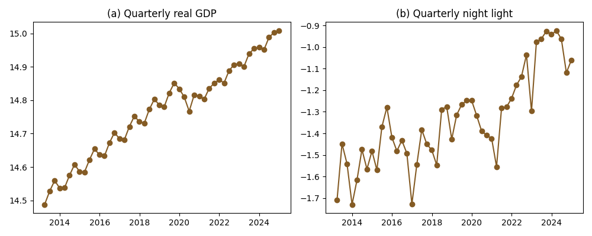
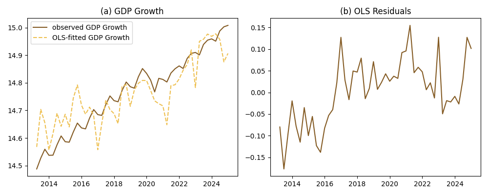

![]()

Forecasting Indonesian economic growth using night light
Abstract
Economic growth is one of the most important indicator that influences economic decisions of private enterprises and governments. Therefore, tracking economic growth in higher frequency would benefit decision makers. One way to verify the official growth number is to use relevant leading indicators for economic growth that are independent from the statistical agency. In this paper, we use the Indonesian nighttime light index to fit historical economic growth of Indonesia. We utilise three different macroeconometric techniques and compare their performances.
Keywords
Night Light, Growth Forecasting, BPS
1 Introduction
GDP and economic growth are arguably the most significant sources of data for the government. Economic growth rate is used as an anchor for various other indicators. It forms the foundation for critical modeling and analysis used by both governments and private investors to make economic decisions and implement policy measures. More importantly, GDP often serves as a performance indicators for the government, which provides an incentive for misreporting growth number (Martínez 2022). It is therefore essential to develop alternative methods to validate and evaluate economic growth data.
One such method lies in the use of nighttime lights as a proxy to nowcast economic growth. The use of satellite imagery, particularly in the form of nighttime lights, has increased in relevance over the last 20 years. Technology has developed to allow for the detection of signals at night coming from common artificial light sources such as streetlights, buildings, and vehicles. This data can then be used to measure human activity, a critical component of economic growth. Nighttime lights growth serves as a good predictor of economic growth at the national and sub-national levels (Henderson, Storeygard, and Weil 2012; Bickenbach et al. 2016; Martínez 2022). Henderson, Storeygard, and Weil (2012) shows how nighttime lights data are able to serve as a better predictor of economic growth than various indicators and proxies in other countries. The fact that nighttime lights data is procured from NASA as an open source ensures full transparency. The data is readily available without any pre-processing or involvement from third parties, meaning it is immune to the fluctuations in perceived credibility that are associated with statistical agencies. The independence from statistical agencies is an important condition that positions nighttime lights well as a leading indicator for GDP growth (Enders 2014).
In this paper, we utilize a raster of monthly nighttime lights data from Indonesia provided by NASA’s Black Marble project (Stefanini Vicente and Marty 2023). We then average the data into quarterly, mirroring the GDP data from BPS. We then fit nighttime lights index on real GDP growth using OLS and Autoregressive Distributed Lag (ARDL) model showed the most promising fit. Importantly, we find evidence of a potential structural break post COVID-19. Additionally, we provide a provincial analysis to provide cross-sectional variance. We utilise OLS, provincial fixed effect and two-way fixed effect regression.
This paper aims to test whether nighttime light can be a sole predictor of GDP without adding other variables. We find that nighttime light index provides a consistent significant correlation to GDP growth across various specifications. However, the magnitude of the correlation is small, suggesting that nighttime light index alone cannot capture the full variation of GDP growth. However, We also find indicative evidence that the scarring effect post COVID-19 pandemic (Pangestu and Armstrong 2025) hurts long term economic growth by 2%. The ARDL specification with scarring effect show the best forecasting fit and is reasonably able to forecast GDP growth out-of-sample.
The paper is organised as follows. We discuss the nighttime lights data collection process and exploratory data analysis section two. The methodology development is covered in section three. Section four discusses the model results, followed by a conclusion in section five.
2 Data Collection and Processing
NASA Black Marble (Stefanini Vicente and Marty 2023) is a a daily calibrated, corrected, and validated product suite, curated such that nighttime lights data can be used effectively for scientific observations. The product suite takes full advantage of the capabilities of the Visible Infrared Imaging Radiometer Suite (VIIRS) instrument, which is a component of the Suomi National Polar-orbiting Partnership (NPP) satellite. The instrument consists of 22 spectral bands from the ultra-violet to the infrared, of which the day night band (DNB) in particular is used to observe nighttime lights. The DNB is ultra-sensitive, and can detect very dim light that is several times fainter than daylight. The band covers 0.5–0.9 µm wavelengths (visible green to near-infrared), which is exactly the range of light emitted by common artificial sources like streetlights, buildings, vehicles, and even fishing boats.
While the analysis of nighttime lights has become more popular over the last two decades, a surprisingly few number of studies employ the use of data from VIIRS (Gibson, Olivia, and Boe-Gibson 2020). The new nighttime lights data offers a sharper resolution and higher frequency compared to the previous generation of nighttime lights data. Black Marble’s standard science removes cloud-contaminated pixels and and corrects for atmospheric, terrain, vegetation, snow, lunar, and stray light effects on the VIIRS instrument.
The data collection process was performed using the Black Marble Python package developed by the World Bank (Stefanini Vicente and Marty 2023). After mapping and defining Indonesia’s coordinates as the region of interest, we were able to use the blackmarblepy package to access NASA Black Marble as a xarray dataset. NASA’s Black Marble suite offers daily, monthly, and yearly global nighttime lights data. Rasters were able to be created at all three frequency levels. Each xarray dataset contains a nighttime lights tile that is gap-filled and corrected, with a resolution of 500m. Critically, each dataset also contains a main variable representing radiance, a numerical measure of the amount of light energy emitted or reflected from a surface per unit area in a given direction, expressed in watts per square meter per steradian \((W \cdot m^{-2} \cdot sr^{-1})\). It is this measure that allows for nighttime lights to be compared and used as a proxy for GDP growth.

Figure 1 The figure is a visualization of the yearly raster for nighttime lights in Indonesia in 2023. There is a stark contrast between the nighttime lights activity in Java compared to other islands, which is reflective of significant gaps in various socioeconomic indicators between Java and the rest of Indonesia. The stark difference in economic activity between Java and the rest of Indonesia is well-documented in literature, and is a consequence of the landscape and soil of the island facilitating stronger agricultural yields and population growth.
Black Marble data can also be extracted for multiple time periods. The function will return a raster stack, where each raster band corresponds to a different date. The following code snippet provides examples of getting data across multiple days, for the month of May 2024 in Indonesia. We define a date range using pd.date_range.

Here we can see the fluctuations that exist within a given month, fluctuations that may be difficult to pinpoint from monthly or yearly rasters. One advantage of the flexibility of nighttime lights data is the ability to process it to suit the needs of any kind of time series analysis. In this instance, to facilitate the goal of making a proper comparison between nighttime lights and GDP, both series needed to be expressed on the same unit level. In Indonesia, GDP growth is typically reported in quarterly year-on-year terms. To align the nighttime lights data with this format, multiple steps were needed. First, monthly rasters were extracted from January 2012 to December 2024, covering the full period of available Black Marble nighttime lights data. The data was then saved as a .zip file. The radiance values were also extracted and saved as a separate .csv file.
With the radiance values extracted in a monthly form, the next steps involved transforming the data into quarterly year-on-year terms. Nighttime lights data was aggregated into quarterly terms. The data was then lagged and shifted 1 year back, from which the year-on-year change was able to be calculated.
GDP data was straightforward to collect due to the data being readily available from the BPS website (BPS 2025). Quarterly real GDP is used for the purposes of this study. The GDP series includes data from Q1-2010 to Q2-2025, but we will use Q1-2012 as our starting point in line with the availability of nighttime lights data from NASA Black Marble. We also collets the provincial quarterly real GDP for the provincial-level regression.

Figure 3 shows our two main variables. The left panel is the national real GDP sourced from BPS (2025) while the right panel is the calculated night lights we gathered via Black Marble python package. Both seems to follow similar trend. However, night light index doesn’t show significant drop during the COVID time, unlike GDP. Additionally, the nightlight index looks to be more stationary before 2022, and then show a positive trend. From the visual inspection, both series seems to be non-stationary.
3 Methodology
For the national level, we do not have any cross-sectional variation. Therefore, techniques that utilise cross-sectional mean cannot be exploited. Multivariate time series techniques, thus, should be the appropriate method.
First, we try a simple OLS: \[ g_t=\alpha_0+\alpha_1 ntli_t + \epsilon_t \]
where \(g_t\) is the log of quarterly GDP at time \(t\), \(ntli_t\) is the log quarterly night light index at time \(t\), \(\alpha_0\) is the constant term, \(\alpha_1\) is the coefficient of night light index, and \(\varepsilon_t\) is the error term. We then examine the error term and see if there is a bias in the residuals. It is reasonable to find autocorrelation in the residual with two time series data. We then use ARDL to take into account the autocorrelation (Enders 2014). We use lags determined by AIC.
\[ g_t=\beta_0+\sum_{i=1}^{p}\beta_i g_{t-i}+\sum_{j=0}^{q}\delta_j ntli_{t-j}+\varepsilon_t \]
In addtion to the above specification, we also test with quarter dummy, Covid dummy (2020-2022) and scarring dummy (2020 onwards).
For the regional level analysis allows for a cross-sectional dimension to be added to the time series data. This allows us to use panel data techniques. We can use provincial fixed effect and two-way fixed effect (TWFE) models.
4 Estimation Results
4.1 National-level analysis

| Variable | Coefficient |
|---|---|
| const | 15.4878*** |
| (0.0561) | |
| ntlg | 0.5401*** |
| (0.0407) | |
| Observations | 55 |
| R-squared | 0.7683 |
| Adj. R-squared | 0.7639 |
| F-statistic | 175.76 |
Figure 4 shows the OLS fit and the residuals while Table 1 show the regression result. The nighttime light show a strong correlation to the quarterly GDP. 1% increase in nighttime light index corresponds with 0.57% increase in GDP. However, Figure 4 shows a clear bias on the residuals. The model overpredicts GDP pre-2017 and underpredicts GDP post 2017. This suggest that OLS is not the proper method to model these two series.

Figure 5 shows the ARDL approach. We ran six different specification. The panel (a) shows a baseline model with only log GDP and log nighttime light. Panel (b) adds COVID dummy, that is, a dummy equals one for the year 2020-2022. Panel (c) adds the dummy scar equals 1 for all observation starting 2020. Panel (d) adds quarterly dummy. Panel (e) combines covid dummy with quarterly dummy, while panel (f) use scarring dummy and quarterly dummy. solid line is the actual GDP data while the dashed line illustrate the predicted GDP.
We can see from the Figure 5 that all predicted value follow the actual GDP very well. However, the GDP value predicted by model with scarring, that is, both panel (c) and (f), looks have the smalles discrepancy with the actual data.
| Variable | Baseline | +Covid | +Scar | +Quarterly | +Q+C | +Q+S |
|---|---|---|---|---|---|---|
| const | 2.2942 | 2.9864 | 49.8166*** | 2.5612* | 2.8221* | 37.7501*** |
| (1.5716) | (1.7920) | (5.2152) | (1.3806) | (1.4232) | (4.9545) | |
| trend | 0.0008 | 0.0020 | 0.0424*** | 0.0013 | 0.0020* | 0.0321*** |
| (0.0011) | (0.0014) | (0.0045) | (0.0010) | (0.0011) | (0.0042) | |
| g.L1 | 0.5393*** | 0.5947*** | -0.7533*** | 0.6644*** | 0.6247*** | -0.6215*** |
| (0.1316) | (0.1331) | (0.1196) | (0.1254) | (0.1061) | (0.1025) | |
| g.L2 | -0.0804 | -0.4507*** | -0.9372*** | 0.1776 | 0.0812 | -0.4841*** |
| (0.1638) | (0.1561) | (0.0865) | (0.1660) | (0.1338) | (0.1249) | |
| g.L3 | 0.0036 | 0.2549 | -0.7755*** | -0.2861* | -0.1873 | -0.5542*** |
| (0.1682) | (0.1627) | (0.1224) | (0.1691) | (0.1371) | (0.1103) | |
| g.L4 | 0.3857*** | 0.3967*** | 0.0147 | 0.2708** | 0.2861*** | 0.0454 |
| (0.1352) | (0.1234) | (0.0766) | (0.1275) | (0.1020) | (0.0631) | |
| covid.L0 | -0.0003 | -0.0031 | ||||
| (0.0098) | (0.0082) | |||||
| covid.L1 | -0.0482*** | -0.0401*** | ||||
| (0.0129) | (0.0108) | |||||
| covid.L2 | 0.0370*** | 0.0318*** | ||||
| (0.0136) | (0.0086) | |||||
| covid.L3 | -0.0272* | |||||
| (0.0147) | ||||||
| covid.L4 | 0.0262** | |||||
| (0.0113) | ||||||
| ntlg.L0 | 0.0855*** | 0.0350 | 0.0119* | 0.0571** | 0.0312* | 0.0115** |
| (0.0229) | (0.0227) | (0.0059) | (0.0212) | (0.0183) | (0.0048) | |
| ntlg.L1 | 0.0033 | -0.0350 | -0.0275 | -0.0372** | ||
| (0.0245) | (0.0209) | (0.0207) | (0.0176) | |||
| ntlg.L2 | -0.0460** | |||||
| (0.0224) | ||||||
| q1.L0 | -0.0108*** | |||||
| (0.0023) | ||||||
| q2.L0 | 0.0299*** | 0.0273*** | ||||
| (0.0077) | (0.0062) | |||||
| q3.L0 | 0.0293*** | 0.0278*** | 0.0079*** | |||
| (0.0078) | (0.0062) | (0.0025) | ||||
| scar.L0 | -0.0201*** | -0.0204*** | ||||
| (0.0043) | (0.0035) | |||||
| scar.L1 | -0.0965*** | -0.0937*** | ||||
| (0.0064) | (0.0053) | |||||
| scar.L2 | -0.0621*** | -0.0400*** | ||||
| (0.0127) | (0.0114) | |||||
| scar.L3 | -0.0679*** | -0.0308** | ||||
| (0.0090) | (0.0115) | |||||
| scar.L4 | -0.0342*** | -0.0276*** | ||||
| (0.0110) | (0.0094) | |||||
| Observations | 51 | 51 | 51 | 51 | 51 | 51 |
| AIC | -275.94 | -291.52 | -408.79 | -287.61 | -309.81 | -428.67 |
| BIC | -256.62 | -264.48 | -383.68 | -266.36 | -282.76 | -399.69 |
Table 2 show the estimated parameters of the 6 models. Indeed, models with scarring show the lowest AIC and BIC, which suggests the specifications are the most efficient compared to the other specification. Scarring effect leads to a 2% less of a quarterly GDP. Importantly, the current nighttime light index is significant for all but the covid-dummy specification. The base model shows the strongest correlation, where a higher 1% nighttime light index correlates with a higher 0.0855% GDP. For the scarring specification, the coefficients are 0.0119 and 0.0115 respectively. That is, a higher 1% nighttime light index correlates with a higher 0.0119% GDP.

To test whether the model can forecast GDP well, we divide the data into training set consisting all observation prior to 2024, and testing set, consists of the rest. The result is illustrated in Figure 6. The solid line is the actual GDP, the dashed line is the predicted GDP using the training set, while the dotted line is the forecast using the testing set. We can see from the Figure 6 that the model with scarring dummy can predict with better fit and smaller error. Notably, the GDP prediction is less sensitive to the nighttime light fluctuation compared to the scarring dummy and the GDP lags. In fact, the nighttime light index is less useful the smaller the training set is used (reflected in the AIC and BIC).
4.2 Regional-level analysis

Figure 7 is a scatterplot of nighttime lights against regional GDP for 34 provinces in Indonesia from 2014Q1 to 2024Q4. Java exhibits a stark contrast compared to the rest of Indonesia. NIghttime light index show a substantially higher intensity along with its RGDP (Regional GDP) compared to other island groups. The data points for Java in blue color are clustered toward the higher end of both axes, indicating higher levels of economic activity and luminosity relative to other regions. Conversely, though the linear trend between nighttime light and provincial GDP are still visible, provinces outside Java show greater dispersion. This implies more variation in the relationship between light intensity and GDP possibly due to differences in economic structure or spatial distribution of economic activities. In regions outside Java, the economic structure is dominated by agriculture, plantation activities, and mining industries. While these sectors contribute significantly to regional output, they produce comparatively low levels of nighttime lights.
The varying degree of light-GDP relationship across islands (and, by extension, across provinces) suggests that using nighttime lights as a proxy for economic activity may require adjustments based on regional characteristics. For instance, provinces with economies heavily reliant on non-luminous sectors may not exhibit a strong correlation between light intensity and GDP. This highlights the importance of considering local economic structures when utilizing nighttime lights data for economic analysis. Indeed, potentially looking at national-level only might mask these regional differences.
| OLS (1) | OLS (2) | OLS (3) | FE (4) | FE (5) | FE (6) | TWFE (7) | |
|---|---|---|---|---|---|---|---|
| Nighttime Light, ln | 0.561*** | 0.560*** | 0.560*** | 0.317*** | 0.304*** | 0.205*** | 0.0649** |
| (0.0119) | (0.0118) | (0.0119) | (0.0344) | (0.0318) | (0.0334) | (0.0250) | |
| COVID-19 dummy | \(\checkmark\) | \(\checkmark\) | |||||
| Post pandemic (scarring) dummy | \(\checkmark\) | \(\checkmark\) | |||||
| \(R^{2}\) | 0.545 | 0.546 | 0.545 | 0.392 | 0.471 | 0.529 | 0.837 |
Table 3 show the regional panel regression. As the baseline (column OLS), we estimate the correlation between nighttime lights (NTL) and regional GDP using a pooled Ordinary Least Squares (OLS) model, which captures the overall association between the variables. the next three columns employ a fixed-effects (FE) model to control for time-invariant provincial characteristics. The last column show a two-way fixed-effects (TWFE) model that advanced the FE estimation by incorporating year fixed effects to account for common shocks affecting all provinces simultaneously. With applied time fixed-effects, the scarring and COVID dummies are no longer needed.
The regression results show a strong and statistically significant relationship at the 0.1 percent level between regional GDP and nighttime light intensity across all static model specifications. Coefficients from the OLS and fixed-effects models remain positive and stable even after controlling for COVID-19 and post-pandemic scarring effects. The overall elasticity pattern between regional GDP and nighttime light intensity remains consistent over time.
The coefficient on the OLS model corroborates that of the national level OLS. The FE model show a slightly smaller coefficient, suggesting the importance of the provincial difference. Controlling for time fixed effect, the coefficient drops to 0.0649. That is, a 1% increase in nighttime light index corresponds to a 0.0649% increase in regional GDP.
To account for the possibility that the relationship between GDP and nighttime lights evolves dynamically rather than instantaneously, we extend the analysis using a Dynamic Fixed Effects (DFE) error-correction model. Unlike the static FE and TWFE specifications, the DFE framework allows for short-run fluctuations while modeling a long-run equilibrium relationship between the variables. Specifically, it incorporates lagged adjustments so that deviations from the long-run relationship can gradually converge back to equilibrium. At the same time, the model retains fixed effects to control for unobserved, time-invariant provincial heterogeneity. The DFE results provide strong evidence of a stable long-run relationship between the two variables. The error-correction term is negative and statistically significant across all specifications. Importantly, the magnitude and significance of the error-correction coefficient remain robust even after controlling for the COVID-19 and post-pandemic scarring periods. This suggests that, although the pandemic caused temporary disruptions, it did not fundamentally alter the long-run linkage between economic activity and nighttime light intensity.
5 Discussion and Conclusion
We ran national-level and regional-level regression to inspect the relationship between nighttime light index and GDP. Overall, we find that nighttime light index can be used to predict GDP growth well. However, there are some caveats that need to be highlighted. Analyzing national-level and regional-level provide us with bi-variate time series analysis coupled with insights from panel data regression. We find that the OLS results are significant, large. and provide consistent estimators when regional cross-sectional variation is added. However, OLS provides biased estimators for both the national-level and regional-level analysis. Once we take into account autocorrelation (from the ARDL specification) and provincial bias (using fixed effects), the strength of the nightlight index reduces.
There are two potential key takeaways from the national-level analysis. First, the scarring effect is important to forecast GDP, more than other variables. We can see this especially when we use quarterly dummy. From Figure 5, The panel (c) and (f) show that quarterly dummy do not significantly add insight, while panel (d) and (e), panels with quarterly dummy without scarring, show a looser fit. This finding is consistent with other studies that find the potential scarring effect from the COVID pandemic in Indonesia (Pangestu and Armstrong 2025).
Secondly, the nightlight index do not perform as well as we think. We understand that the variation of the nighttime light index is small compared to the GDP variation. It is most apparent during the COVID-19 pandemic, where the GDP drop significantly, while the nighttime light index only drop only slightly. Various potential reasons can explain this phenomenon. First, nighttime light index might not accurately capture the actual emitted light in Indonesia amid cloud cover, atmospheric conditions, or other factors that affect the quality of satellite imagery especially in the tropical region. Secondly, the Indonesian government increasingly use electricity subsidy during hard times. This leads to the nighttime index unable to capture a heavy downturn where the government decided to step in to maintain electricity consumption.
Nevertheless, the ARDL model shows a promising result to forecast GDP. The out-of-sample forecast shows that the model can predict GDP well, especially when we use scarring dummy using minimal number of variables. Secondly, we demonstrate that nighttime light index cannot be used by itself. However, its consistent significance across various specifications suggest that nighttime light index can be considered to feed a nowcasting model.
References
Bickenbach, Frank, Eckhardt Bode, Peter Nunnenkamp, and Mareike Söder. 2016. “Night Lights and Regional GDP.” Journal Article. Review of World Economics 152 (2): 425–447. https://doi.org/https://doi.org/10.1007/s10290-016-0246-0.
BPS. 2025. [Seri 2010] 4. Laju Pertumbuhan PDB Menurut Pengeluaran, 2025. Diakses Pada 14 September 2025. Https://www.bps.go.id/id/statistics-table/2/MTA4IzI=/-seri-2010–4–laju-pertumbuhan-pdb-menurut-pengeluaran–persen-.html.
Enders, Walter. 2014. Applied Econometric Time Series. Wiley.
Gibson, John, Susan Olivia, and Geua Boe-Gibson. 2020. “Night Lights in Economics: Sources and Uses.” Journal Article. Journal of Economic Surveys 34: 955–980. https://doi.org/https://doi.org/10.1111/joes.12387.
Henderson, J. Vernon, Adam Storeygard, and David N. Weil. 2012. “Measuring Economic Growth from Outer Space.” The American Economic Review 102 (2): 994–1028. http://www.jstor.org/stable/23245442.
Martínez, Luis R. 2022. “How Much Should We Trust the Dictator’s GDP Growth Estimates?” Journal Article. Journal of Political Economy 130 (10): 2731–2769. https://doi.org/10.1086/720458.
Pangestu, Mari, and Shiro Armstrong. 2025. “Is This Time Different? Indonesia’s Response to Uncertainty.” Bulletin of Indonesian Economic Studies 61 (3): 297–332. https://doi.org/10.1080/00074918.2025.2588819.
Stefanini Vicente, Gabriel, and Robert Marty. 2023. BlackMarblePy: Georeferenced Rasters and Statistics of Nighttime Lights from NASA Black Marble. Https://worldbank.github.io/blackmarblepy. https://doi.org/10.5281/zenodo.10667907.
Appendix
5.1 Introduction
This is the notebook file to replicate our macroeconometrics approach. This notebook does not contain the blackmarblepy application. Source data is from blackmarblepy for nightlight, and BPS. If you happens to find any issues, you can find Tim via timothy.ginting@dewanekonomi.go.id. We are so greatful for any feedbacks and comments.
You will see the following sections in this notebook:
- Real GDP and quarterly night light index (NTL) graph;
- OLS and residuals;
- ADF test and Johansen Cointegration test;
- VECM graph;
- VAR graph; and
- ARDL graph.
We do those steps for both quarterly dataset and growth dataset.
We are still working on the regional regression.
5.2 Quarterly Real GDP vs Quarterly NTL.
5.2.1 Dataset
turn on the last line to see the dataframe.
5.2.2 OLS for National Data
We run an ols for the national data
5.2.3 OLS and residuals
OLS Regression Results
==============================================================================
Dep. Variable: g R-squared: 0.768
Model: OLS Adj. R-squared: 0.764
Method: Least Squares F-statistic: 175.8
Date: Fri, 06 Feb 2026 Prob (F-statistic): 1.83e-18
Time: 14:12:50 Log-Likelihood: 61.443
No. Observations: 55 AIC: -118.9
Df Residuals: 53 BIC: -114.9
Df Model: 1
Covariance Type: nonrobust
==============================================================================
coef std err t P>|t| [0.025 0.975]
------------------------------------------------------------------------------
const 15.4878 0.056 275.961 0.000 15.375 15.600
ntlg 0.5401 0.041 13.257 0.000 0.458 0.622
==============================================================================
Omnibus: 0.196 Durbin-Watson: 0.879
Prob(Omnibus): 0.907 Jarque-Bera (JB): 0.397
Skew: 0.026 Prob(JB): 0.820
Kurtosis: 2.587 Cond. No. 10.8
==============================================================================
Notes:
[1] Standard Errors assume that the covariance matrix of the errors is correctly specified.
5.3 ARDL with quarterly dataset
This is for ARD with quarterly dataset. We first subset the data from the original ntl object, then loop the 6 specifications. The first code generate the 6 panel graphs. We then use the next cell to save regression tables and lastly we try splitting the observation into training and testing.

Saved to reg/ardl_results.csvbaseline: MAE=0.0271, RMSE=0.0296
covid: MAE=0.2259, RMSE=0.2643
scar: MAE=0.0025, RMSE=0.0032q: MAE=0.0099, RMSE=0.0117q_covid: MAE=0.0117, RMSE=0.0131q_scar: MAE=0.0029, RMSE=0.0032
Training period: 2013-03 to 2023-12
Testing period: 2024-03 to 2025-09| Dep. Variable: | g | No. Observations: | 44 |
|---|---|---|---|
| Model: | ARDL(4, 0, 0, 0, 4) | Log Likelihood | 180.587 |
| Method: | Conditional MLE | S.D. of innovations | 0.003 |
| Date: | Fri, 06 Feb 2026 | AIC | -331.175 |
| Time: | 14:12:59 | BIC | -305.842 |
| Sample: | 03-31-2014 | HQIC | -322.015 |
| - 12-31-2023 |
| coef | std err | z | P>|z| | [0.025 | 0.975] | |
|---|---|---|---|---|---|---|
| const | 39.4751 | 6.124 | 6.446 | 0.000 | 26.886 | 52.064 |
| trend | 0.0334 | 0.005 | 6.426 | 0.000 | 0.023 | 0.044 |
| g.L1 | -0.6910 | 0.135 | -5.103 | 0.000 | -0.969 | -0.413 |
| g.L2 | -0.4601 | 0.152 | -3.034 | 0.005 | -0.772 | -0.148 |
| g.L3 | -0.5935 | 0.142 | -4.175 | 0.000 | -0.886 | -0.301 |
| g.L4 | 0.0198 | 0.072 | 0.276 | 0.785 | -0.127 | 0.167 |
| ntlg.L0 | 0.0111 | 0.006 | 1.960 | 0.061 | -0.001 | 0.023 |
| q1.L0 | -0.0117 | 0.003 | -3.972 | 0.001 | -0.018 | -0.006 |
| q3.L0 | 0.0095 | 0.003 | 3.061 | 0.005 | 0.003 | 0.016 |
| scar.L0 | -0.0204 | 0.004 | -5.413 | 0.000 | -0.028 | -0.013 |
| scar.L1 | -0.0951 | 0.006 | -16.701 | 0.000 | -0.107 | -0.083 |
| scar.L2 | -0.0453 | 0.014 | -3.214 | 0.003 | -0.074 | -0.016 |
| scar.L3 | -0.0275 | 0.014 | -2.017 | 0.054 | -0.056 | 0.001 |
| scar.L4 | -0.0332 | 0.011 | -2.890 | 0.008 | -0.057 | -0.010 |
Reuse
This work is dedicated to the Public Domain
Citation
BibTeX citation:
@online{gupta2026,
author = {Gupta, Krisna and Kinmekita Ginting, Timothy and Afidatie,
Meizahra},
title = {Forecasting {Indonesian} Economic Growth Using Night Light},
date = {2026-02-06},
langid = {en},
abstract = {Economic growth is one of the most important indicator
that influences economic decisions of private enterprises and
governments. Therefore, tracking economic growth in higher frequency
would benefit decision makers. One way to verify the official growth
number is to use relevant leading indicators for economic growth
that are independent from the statistical agency. In this paper, we
use the Indonesian nighttime light index to fit historical economic
growth of Indonesia. We utilise three different macroeconometric
techniques and compare their performances.}
}
For attribution, please cite this work as:
Gupta, Krisna, Timothy Kinmekita Ginting, and Meizahra Afidatie. 2026.
“Forecasting Indonesian Economic Growth Using Night Light.”
February 6.